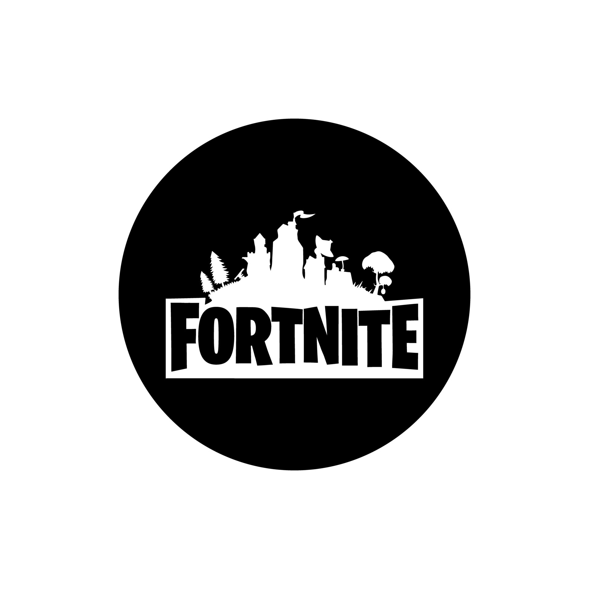
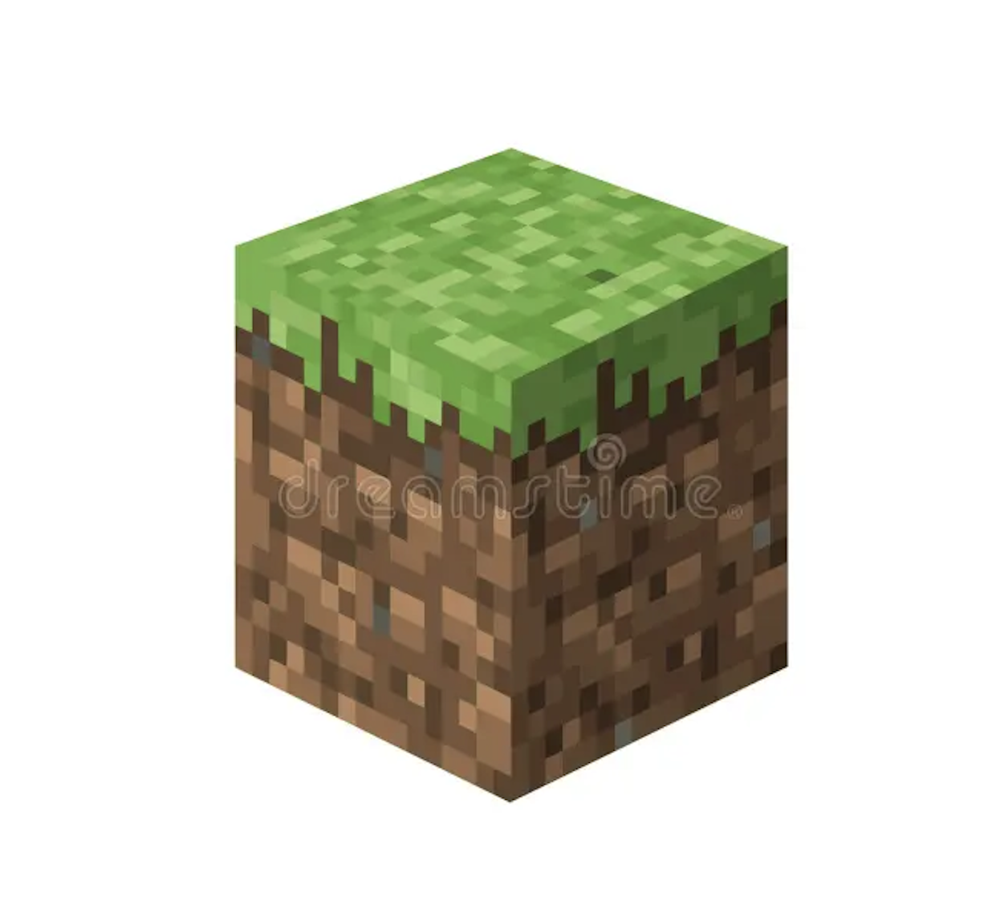

Welcome to Game Creation Center
Your go-to destination for game development resources and community.
Join Today
Game Engines
Unity: Unity is a versatile and widely used game engine known for its ease of use. It's great for both 2D and 3D game development and supports a wide range of platforms.
Unreal Engine: Unreal Engine is renowned for its stunning graphics and robust capabilities. It's ideal for creating high-end, visually appealing games.
Godot: Godot is an open-source engine that's gaining popularity for its user-friendly interface and flexibility.
Learn More
Getting Started with Game Development
Learn the Basics: Begin by learning programming languages like C# (for Unity) or C++ (for Unreal Engine).
Select the Right Tools: Choose a game engine that suits your project and skill level. Unity is a great starting point for beginners.
Online Courses and Communities: Explore online courses, tutorials, and forums like Unity Learn or Unreal Engine's official documentation to build your skills.
Get Started



Most Popular Games Right Now
Fortnite: Fortnite's continuous evolution, engaging live events, and cross-platform accessibility highlight the significance of community-building and player engagement, offering game developers valuable insights into keeping a game fresh and retaining a dedicated player base.
Minecraft: Minecraft's enduring success lies in its unparalleled creativity and modding community, offering valuable lessons for game developers on the power of player-driven content and open-ended sandbox experiences.
ROBLOX: Roblox's user-generated content model and immersive 3D worlds showcase the potential of empowering players to become creators, making it an essential case study for game developers seeking to foster a participatory gaming ecosystem.
Play Now